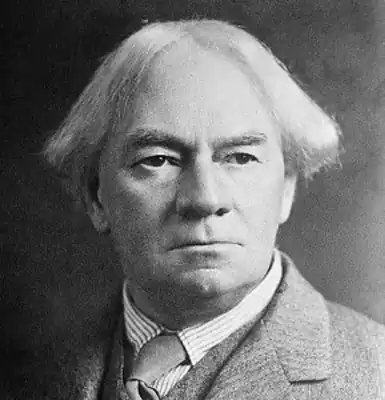
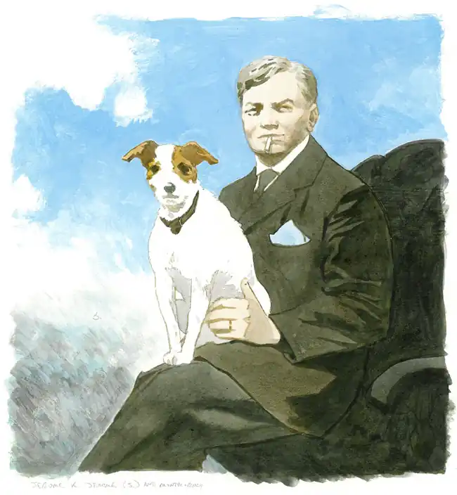

(02.05.1859 — 14.06.1927)
Англійський письменник-гуморист, журналіст, драматург. За життя був найбільш відомим англійським гумористом і одним з найбільш друкованих англомовних письменників. Відмітна риса творчості: здатність отримувати комізм з найпростіших життєвих положень.
Джером К. Джером народився в Уолсоле, невеликому містечку графства Стаффордшир, центральна Англія. Джером був четвертою дитиною в сім'ї Джерома КЛЕП, який пізніше змінив ім'я на Джером КЛЕП Джером. Батько Джерома був торговцем залізними виробами, а також проповідником без духовного сану. У 1861 г.семья Джерома збідніла після невдалих інвестицій в місцеву гірничодобувну промисловість. У 1871 р помер батько Джерома, а в 1873 р у віці 14-ти років Джером був змушений залишити навчання в школі. Майбутній письменник почав працювати клерком в залізничній компанії. У 1877 році Джером вирішує спробувати себе в акторському ремеслі під сценічним псевдонімом Гарольд Крічтон. Через три роки безуспішних спроб пробитися, 21-річний Джером вирішує залишити акторську професію і пошукати нове заняття. Він пробував бути журналістом, писав есе, сатиричні оповідання, але в публікації більшості з них йому було відмовлено. У наступні кілька років він був учителем, пакувальником, секретарем адвоката. І, нарешті, в 1885 році була опублікована гумористична новела Джерома "На сцені і за сценою", в якій письменник описував власний акторський досвід. За цією публікацією пішли й інші. 21 червня 1888 року Джером одружився на Джорджини Елізабет Генріетте Стенлі Мерісс. Медовий місяць пара провела в подорож по Темзі, на невеликому човні. Після повернення Джером почав писати "Троє в човні не рахуючи собаки". Прототипи героїв "Троє в човні ..." зліва направо: Карл Хентшель (Харріс), Джордж Уінгрейв (Джордж), Джером К. Джером (Джей) Книга була надрукована в 1889 році, мала шалений успіх, і принесла автору популярність і матеріальне благополуччя. За перші двадцять років було продано більше мільйона екземплярів книги по всьому світу. Також, книга лягла в основу численних кіно-і телефільмів, радіопостановок, п'єс, за її мотивами навіть поставлений мюзикл. Джером цілком присвятив себе літературі, його наступні твори також були популярні, але успіху "Троє в човні ..." письменникові повторити вже не вдалося. У 1892 році Роберт Барр запросив Джерома в журнал "Ледар" (англ. Idler) на посаду редактора (Джером змінив на цій посаді Р. Кіплінга). Журнал був ілюстроване сатиричне щомісячне видання для чоловіків. У 1893 році він заснував журнал "Сегодня" (англ. To-day). У 1898 р Джером програв судову справу за позовом про наклеп і йому довелося виплачувати значну суму, в результаті письменник був змушений піти з посади редактора цих видань. Джером був хорошим оратором і його лекції користувалися популярністю, з лекціями і виступами він відвідав багато країн, в тому числі і Росію (в 1899). Свої враження Джером описав у статті "Росіяни, якими я їх знаю" (в 1906 році видана російською мовою під назвою "Люди майбутнього"). Перша світова війна стала великим потрясінням для письменника. Джером спробував піти на фронт, але в Британську армію його не взяли за віком. Джером влаштувався водієм санітарної машини у французьку армію. Переживання військового часу, а також смерть в 1921 році його падчерки Елсі, гнітюче подіяли на стан Джерома. У червні 1927 року під час автомобільного туру з Девона в Лондон у Джерома стався інсульт. Його поклали в лікарню в Нортгемптон, де письменник провів два тижні будучи не в силах рухатися і говорити, після чого помер. Джером К. Джером похований в Церкві Св. Марії в Евілме, Оксфордшир. Цікаві факти з життя З приводу другого імені Джерома — "Клапка" більшість біографічних джерел повторюють історію, що воно було дано письменникові батьком в знак поваги до генерала Джорджа Клапки, молодому герою угорської війни 1849 роки за незалежність. Джордж Клапка був змушений емігрувати з Угорщини, деякий час жив у Джерома. Однак сучасні дослідники схиляються до того, що ця історія — містифікація самого Джерома, і друге ім'я було вибрано їм для надання більшої благозвучності. Наступного після виходу книги "Троє в човні ..." рік кількість зареєстрованих на Темзі човнів зросла на п'ятдесят відсотків, що в свою чергу зробило Темзу пам'яткою для туристів.